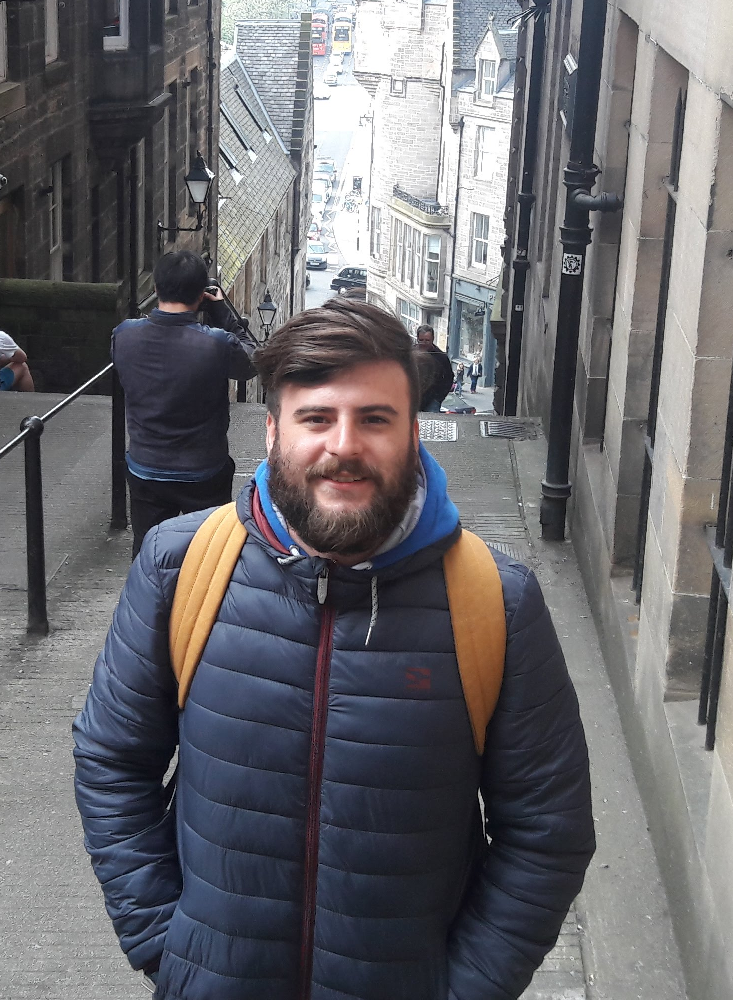

About Me
A litte carrer resumee :)

My name is Roque Molina, I am a Argentinian who has been serving as lawyer for the last three years. On a daily basis, I handle commercial and civil cases in my home city, Córdoba (Argentina), and I aspire to deepen my knowledge in the field of diplomacy.
Throughout my formative years as a lawyer, I acquired a solid understanding of social and legal sciences while reaffirming my interest in Public International and Commercial law. As soon as I graduated, I registered to practice law at the Córdoba Bar Association in mid-2017 which allowed me to have my first professional experience on civil and commercial procedures in the Courts. After three years, I managed to analyze, study and propose strategies to represent people in the Courts.
I must also add that I continued my specialization in legal matters by acting as an TA in the Bankruptcy and Exchange Law for two years. By teaching and doing research, I have developed pedagogical and evaluation skills, and people management.
Finally, in 2019, I enrolled in a post graduate degree in Contemporary Diplomacy with the intention to bring my career towards the International Organizations.